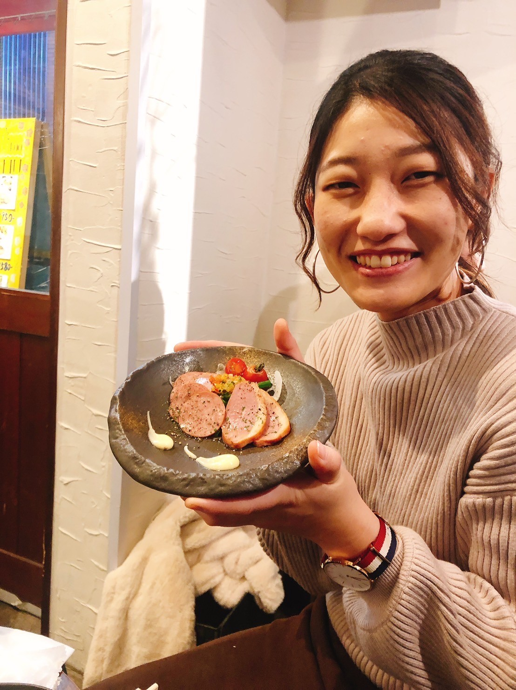

- 
- 『名前』 河上 遥奈
- 『生年月日』 1998年5月7日（24才）
- 『血液型』 A型
- 『出身地』 大阪府大阪市
- 『出身校』 大阪工業大学
- 『好きな食べ物』 たまご
- 『嫌いな食べ物』 魚介類
- 『性格』 はじめは静か
- よろしくお願いします
自分史
-
1998年5月7日
河上家の長女として誕生
体重が3500g位の大きめ
-
2008年
地元の野球チームに入部
やってみると意外とはまった
-
2011年４月
中学校入学
帰宅部を極めながら野球のクラブチームに所属
-
2014年４月
常翔学園高等学校に入学
友達の影響でバレーボール部に入部
-
2017年４月
大阪工業大学に入学
マネージャーとして野球部に入部
-
2021年４月
大阪工業大学大学院に入学
腹膜透析についての研究に没頭
-
2023年４月
エイ・クリエイションに入社
新しいことに挑戦したくてIT業界に